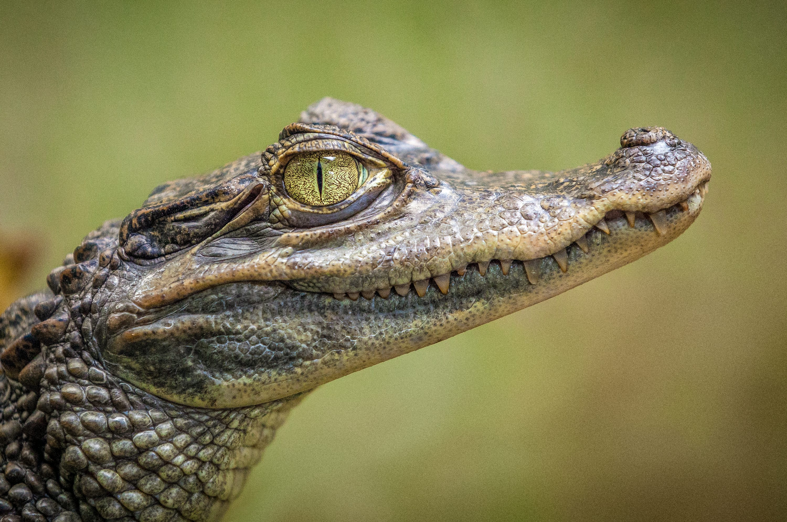

Aligator
Aligator to duży, drapieżny gad z rodziny aligatorowatych, występujący głównie w Ameryce Północnej i Chinach. Ma masywną, szeroką paszczę, silne szczęki i ciemnozieloną skórę pokrytą łuskami. Jest doskonałym pływakiem, spędza dużo czasu w wodzie, polując na ryby, ptaki i ssaki. Może osiągać nawet 4 do 5 metrów długości. Aligatory są znane ze swojej potężnej siły ugryzienia, ale na ogół unikają kontaktu z ludźmi.